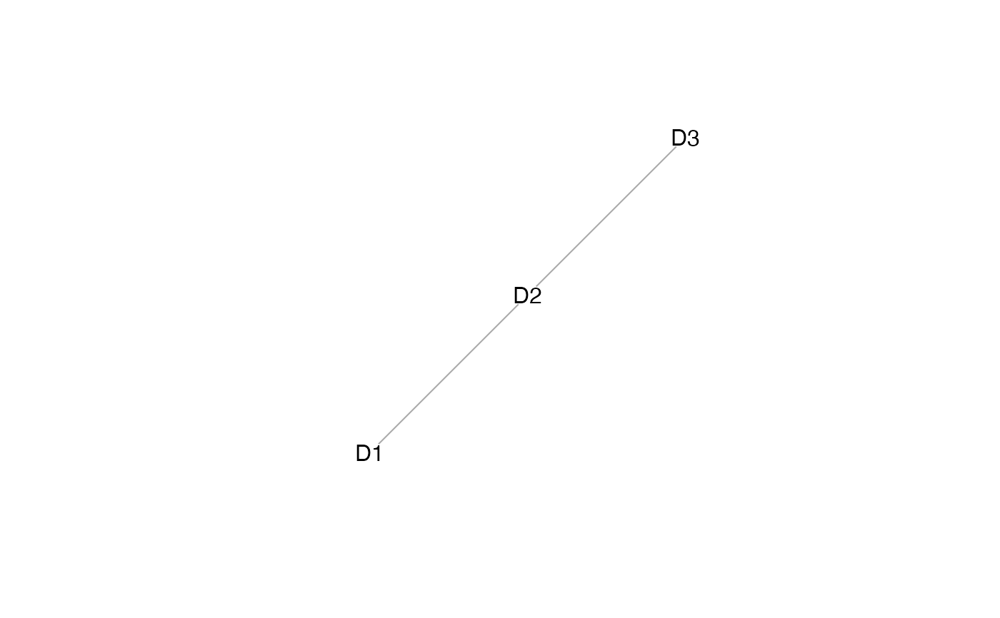

Performs naive imputation of values from the list of mosaic data and joint embedding from StabMap.
List of mosaic data from which to perform imputation.
Joint embedding from which to extract nearest neighbour relationships.
Character vector of cell names to treat as reference cells.
Character vector of cell names to treat as query cells.
Number of nearest neighbours to consider (default 5).
function (default `mean`) to aggregate nearest neighbours' imputed values.
List containing imputed values from each assay_list data matrix which contains reference cells.
set.seed(2021)
assay_list = mockMosaicData()
lapply(assay_list, dim)
#> $D1
#> [1] 150 50
#>
#> $D2
#> [1] 150 50
#>
#> $D3
#> [1] 150 50
#>
# stabMap
out = stabMap(assay_list,
ncomponentsReference = 20,
ncomponentsSubset = 20)
#> treating "D1" as reference
#> generating embedding for path with reference "D1": "D1"
#> generating embedding for path with reference "D1": "D2" -> "D1"
#> generating embedding for path with reference "D1": "D3" -> "D2" -> "D1"
#> treating "D2" as reference
#> generating embedding for path with reference "D2": "D2"
#> generating embedding for path with reference "D2": "D1" -> "D2"
#> generating embedding for path with reference "D2": "D3" -> "D2"
#> treating "D3" as reference
#> generating embedding for path with reference "D3": "D3"
#> generating embedding for path with reference "D3": "D2" -> "D3"
#> generating embedding for path with reference "D3": "D1" -> "D2" -> "D3"

# impute values
imp = imputeEmbedding(assay_list, out)
#> Loading required package: BiocNeighbors
#> Loading required package: abind
# inspect the imputed values
lapply(imp, dim)
#> $D1
#> [1] 150 150
#>
#> $D2
#> [1] 150 150
#>
#> $D3
#> [1] 150 150
#>
imp[[1]][1:5,1:5]
#> D1_cell_1 D1_cell_2 D1_cell_3 D1_cell_4 D1_cell_5
#> gene_1 0.50687450 -0.77149007 -0.2982274 -0.72078317 -0.12148316
#> gene_2 0.05829149 -0.05286518 -0.1375450 0.02383978 -0.35894336
#> gene_3 1.21645830 0.05262619 0.7272864 0.18519759 0.60755035
#> gene_4 -0.49139466 0.23012490 0.1569971 -0.12349555 -0.00984099
#> gene_5 -0.04233858 -0.33526072 -0.2985623 -0.43112877 -0.13828083